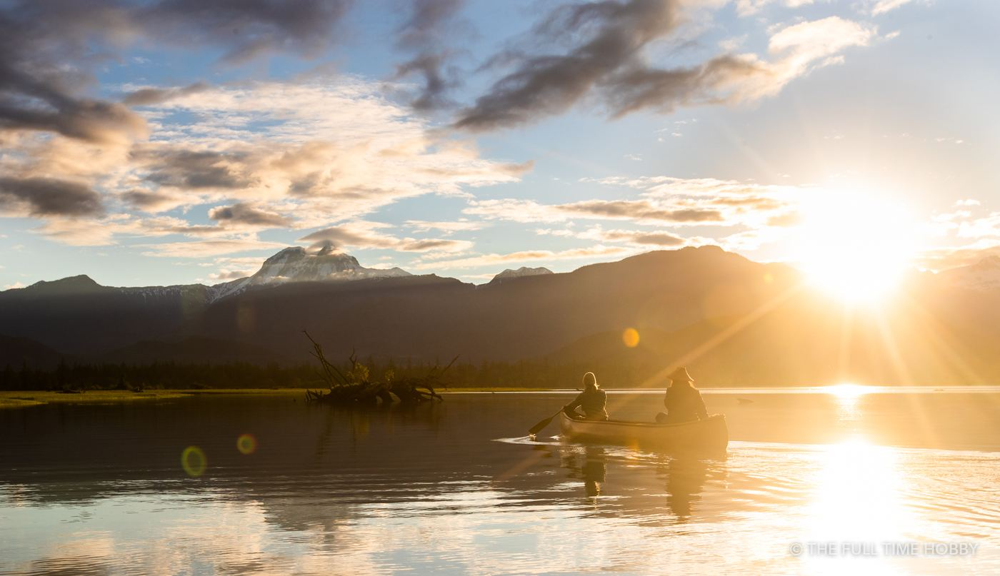
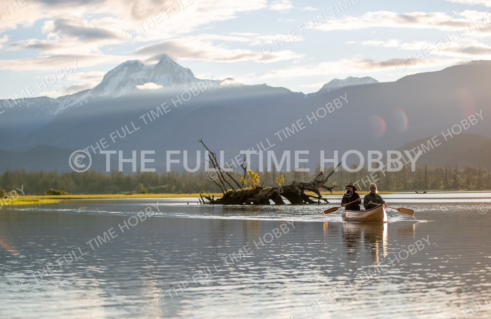
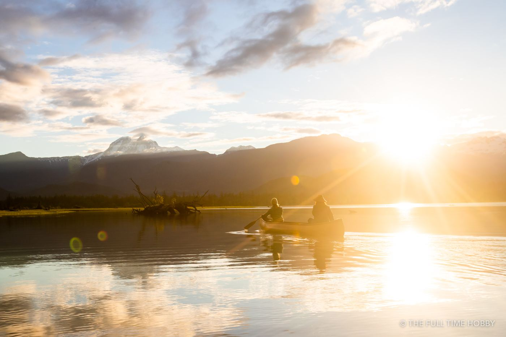

Why shoot from the water?
From a canoe or boat you’re low, quiet and mobile. You can slide into position for a reflection, put a paddler in front of the sun or approach a shoreline without a trail. The Squamish Estuary is a short paddle from town and gives you open views to glaciated peaks, driftwood-strewn flats and, on a good evening, a sky that lights up from edge to edge.
Timing: light, tide and wind
- Golden hour: the hour after sunrise and before sunset. Mornings are often calmer, with mirror reflections.
- Tide: the estuary is tidal. At low tide the flats can be too shallow to paddle, and channels can run faster. Check a tide table and plan your route and your return around it.
- Wind: afternoon wind is common in the valley and on Howe Sound. If a breeze builds, paddle into it first so the return is easy.
- Clouds: a few clouds make a sky. A cloudless sky usually makes flat light.

Composition ideas
- Add a paddler for scale. A small canoe against a big mountain tells the story in one frame.
- Shoot into the sun and expose for the sky so the paddlers become silhouettes.
- Get low for reflections: the closer your lens is to the water, the bigger the mirror image looks.
- Use the driftwood. Weathered logs make strong foreground shapes on the estuary.

Protecting your camera
- Keep your camera in a dry bag or hard case between shots.
- Use a strap on your wrist or neck, always.
- Don’t change lenses on the water. One versatile zoom is plenty.
- Stay seated and keep your weight low and centred.
- Use a lens cloth: drips are the enemy of sharp shots.
Out on Howe Sound
For bigger water, a boat gives you range. Howe Sound is a fjord, which means steep walls and layered ridgelines, and in the evening the light can be spectacular.

Local operators can get you out there: Squamish Water Taxi runs private boat trips and has a guide to photographing the Sound from a boat, and Squamish Canoe Rental delivers canoes and paddleboards to your launch spot.
Leave no trace, respect wildlife
Herons, eagles, seals and waterfowl use the estuary and the Sound. Keep your distance, don’t approach nests and use a long lens instead of a closer boat. Don’t fly a drone near wildlife; see our guide to drone rules in the Sea to Sky.